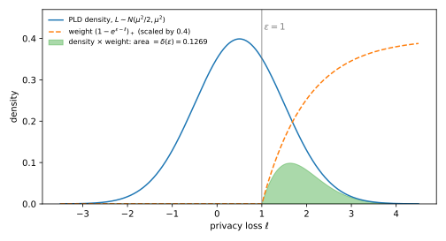
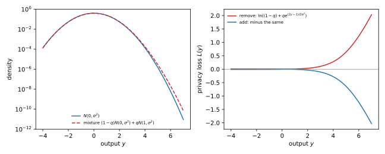
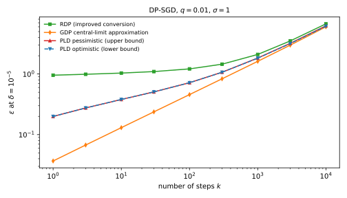
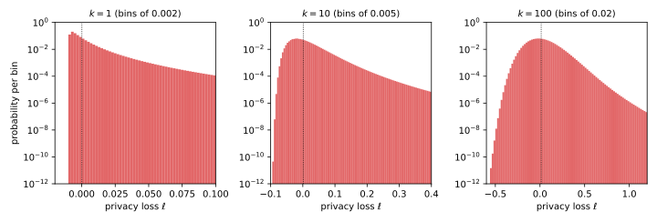

32 Numerical accounting with privacy loss distributions
32.1 Why this matters
You trained a model with differential privacy (DP): 10,000 steps of stochastic gradient descent (SGD), each on a Poisson sample of the data with rate \(q = 0.01\), with clipped gradients and Gaussian noise of multiplier \(\sigma = 1\). This is DP-SGD, the running example of this part, and you need the smallest \(\varepsilon\) for which the whole run is \((\varepsilon, 10^{-5})\)-DP. Rényi differential privacy (RDP), from Rényi DP, gives an upper bound that loses an unknown amount in its conversion. The Gaussian central limit theorem (CLT) of f-DP and Gaussian DP gives an approximation that may err in either direction.
This chapter computes the answer itself. \(\delta(\varepsilon)\) depends on a mechanism only through the distribution of its privacy loss, a distribution on the real line, and composing steps adds losses, so a whole run’s distribution is a convolution that a computer can evaluate on a grid. Rounding in a chosen direction gives the grid’s error a known sign: you get a certified upper bound and a lower bound whose distance you know in advance.
32.2 The privacy loss distribution
Let \(P\) be the distribution of the output on your dataset \(D\) and \(Q\) on a neighbour \(D'\). The privacy loss of an output \(y\) is \(L(y) = \ln\frac{P(y)}{Q(y)}\) (Composition). Draw \(y\) from \(P\) and the loss is a random variable; its distribution is the privacy loss distribution (PLD).
Why should this one-dimensional distribution carry everything? The definition lets each output’s probability under \(P\) be up to \(e^\varepsilon\) times its probability under \(Q\), and \(\delta\) pays only for the excess. An output with loss \(\ell\) has \(P(y) = e^\ell Q(y)\), so its excess is a fraction \(1 - e^{\varepsilon - \ell}\) of its probability when \(\ell > \varepsilon\), and nothing otherwise. That fraction depends on the output only through its loss, so \(\delta\) is an average over the PLD: \[\delta(\varepsilon) = \mathbb E\big[(1 - e^{\varepsilon - L})_+\big] = P[L > \varepsilon] - e^{\varepsilon}\,Q[L > \varepsilon], \tag{32.1}\] where \((x)_+ = \max\{x, 0\}\). The second form reads it as a gap: the chance under \(P\) that the loss exceeds \(\varepsilon\), minus \(e^\varepsilon\) times that chance under \(Q\). An output impossible under \(D'\) has infinite loss and counts fully. So the output space never enters: a run with millions of parameters and a one-dimensional mechanism with the same PLD have the same privacy curve.
The weight is 0 up to \(\ell = \varepsilon\) and rises slowly towards 1, so \(\delta\) is the PLD’s upper tail with losses just above \(\varepsilon\) discounted (Figure 32.1). That is why the plain tail \(P[L > \varepsilon]\) is a loose bound: it counts the barely-over outputs in full.
For the Gaussian mechanism, with \(\mu = \Delta_2f/\sigma\) the sensitivity in noise standard deviations, the two densities have the same shape, so their log-ratio is linear in the output and the loss is itself Gaussian, \(\mathcal N(\mu^2/2, \mu^2)\). Its two tails give the closed form of The Laplace and Gaussian mechanisms, with \(\Phi\) the standard normal distribution function: \[\delta(\varepsilon) = \Phi\Big(\frac\mu2 - \frac\varepsilon\mu\Big) - e^{\varepsilon}\,\Phi\Big(-\frac\mu2 - \frac\varepsilon\mu\Big). \tag{32.2}\] With sensitivity 1 and \(\sigma = 1\), the PLD is \(\mathcal N(0.5, 1)\); at \(\varepsilon = 1\) the formula gives \(\Phi(-0.5) - e\,\Phi(-1.5) = 0.3085 - 0.1816 = 0.1269\), and solving \(\delta(\varepsilon) = 10^{-5}\) gives \(\varepsilon = 4.3772\).

32.3 Composition is convolution
For independent steps the probability of the tuple of outputs is a product, its log is a sum, and so the privacy loss of the run is the sum of the step losses. The distribution of a sum of independent variables is the convolution of their distributions, so the PLD of \(k\) steps is the \(k\)-fold convolution of the per-step PLDs.
This step is exact, which sets it apart from the theorems of Composition: they see each step only through its \((\varepsilon_i, \delta_i)\) and must cover the worst step with those values, while convolution uses each step’s actual shape. All the error in a PLD accountant comes from computing it. Gaussian steps give a check, since means and variances add: \(k\) steps with shift \(\mu\) behave like one Gaussian mechanism with \(\mu_k = \sqrt k\,\mu\). Ten steps with \(\sigma = 1\) are \((17.8566, 10^{-5})\)-DP and a hundred \((91.8173, 10^{-5})\)-DP, values any accountant must reproduce at \(q = 1\). The same picture explains why the CLT is plausible, since long sums look Gaussian; the PLD accountant computes the sum instead.
DP-SGD steps are adaptive: each gradient depends on the model, so the losses are not independent. The repair is a dominating pair, a fixed pair at least as easy to tell apart as the step, whatever came before; convolving the dominating pairs’ PLDs bounds the adaptive run (Zhu, Dong & Wang 2022). The bound is exactly as tight as the pair. For the Gaussian mechanism, \(\mathcal N(0, \sigma^2)\) against \(\mathcal N(1, \sigma^2)\) is produced by real datasets, so nothing is lost; for a subsampled mechanism the pair depends on how batches are drawn and must match your training code.
32.4 Pessimistic and optimistic discretization
A computer convolves vectors, so the loss goes on a grid of width \(h\). The rounding can still give a guarantee, because the weight in Equation 32.1 never decreases as the loss grows: move every loss up and \(\delta\) can only rise, move every loss down and it can only fall.
The pessimistic PLD rounds every loss up to the next grid point and sends any truncated upper tail to \(+\infty\). The optimistic PLD rounds every loss down and drops the truncated lower tail. In any run, each step’s rounded-up loss is at least its true loss, which is at least its rounded-down loss, and adding over \(k\) steps keeps that order for the totals. So at every \(\varepsilon\) \[\delta_{\text{optimistic}}(\varepsilon) \;\le\; \delta(\varepsilon) \;\le\; \delta_{\text{pessimistic}}(\varepsilon). \tag{32.3}\] The same argument gives the width: each step’s two roundings are at most \(h\) apart, so the totals, and the two values of \(\varepsilon\) at your \(\delta\), are at most \(kh\) apart. For a continuous PLD the gap is almost exactly \(kh\): the error grows linearly in \(k\).
The two sides are not equally strong. Raising losses keeps the pessimistic distribution the PLD of a real pair that dominates the original, so the upper bound holds for adaptive composition too. Lowering them can produce a distribution no pair has, so the optimistic value bounds the mechanism from below only when real datasets produce the pair, as for the Gaussian and the subsampled Gaussian.
Randomized response with \(\varepsilon_0 = \ln 3\), composed three times on the coarse grid \(h = 0.5\), has exact \(\delta(1) = 0.4190\) between the pessimistic 0.6758 and the optimistic 0.3648 (Figure 32.2). For Gaussian steps with \(\mu = 1\) on \(h = 10^{-3}\) (Table 32.1), the width is exactly \(kh\) and the exact value sits in the middle, because a loss spread evenly within a cell moves up by about \(h/2\) when rounded up and down by as much when rounded down. The midpoint, like rounding to the nearest point, is a good estimate, but only the two sides are guarantees.
| \(k\) | Exact \(\varepsilon\) | Pessimistic | Optimistic |
|---|---|---|---|
| 10 | 17.8566 | 17.8616 | 17.8516 |
| 100 | 91.8173 | 91.8673 | 91.7673 |

32.5 Composition by FFT
On a common grid, adding two losses adds their grid indices, so composing two discretized PLDs is a discrete convolution of their mass vectors. A fast Fourier transform (FFT) turns it into a pointwise product of transforms, at a cost of order \(N\log N\) for length \(N\), and repeated squaring composes \(k\) steps in at most \(2\log_2k\) convolutions.
The FFT has one trap, which follows from how it works: it attaches to each index a power of an \(N\)-th root of unity, so indices add modulo \(N\), and mass that falls off one end of the window reappears at the other. Ten Gaussian steps with \(\mu = 1\) on \(h = 10^{-3}\) give a pessimistic \(\delta(1) = 0.81891018\), against the exact 0.81851782. On a circular window from loss 0 to 10, the same computation gives 0.83478562, wrong in the second decimal: negative losses, which should count nothing, wrap to the top of the window where they count almost fully. Width 40 gets it right. The error from wraparound can go either way, so a wrapped result is no bound at all; pad every convolution to the sum of its inputs’ lengths. Truncating tails at a tiny mass such as \(10^{-15}\) is safe only if the pessimistic side moves the cut mass up, to \(+\infty\).
Each tenfold refinement of \(h\) makes the vectors ten times longer. The privacy loss random variable (PRV) accountant (Gopi, Lee & Wutschitz 2021) rounds to the nearest point and shifts the grid to preserve the mean loss, so the per-step errors have mean zero and grow like \(\sqrt k\,h\) instead of \(kh\); a grid of \(h \approx 1/\sqrt k\) then suffices, with explicit error bounds. Connect the dots (Doroshenko et al. 2022) builds the best pessimistic PLD on a given grid.
32.6 The subsampled Gaussian
A DP-SGD step with Poisson sampling includes each record with probability \(q\). Without the record in question, the noisy sum is a Gaussian centred at 0; with it, the record is sampled with probability \(q\) and shifts the centre by 1, so the output is a mixture (Amplification by subsampling). Under add/remove neighbours the pair’s two orders differ. With \(D'\) the dataset that holds the record, the remove direction puts it first, \(P = M(D')\) and \(Q = M(D)\): \[P = (1 - q)\,\mathcal N(0, \sigma^2) + q\,\mathcal N(1, \sigma^2), \qquad Q = \mathcal N(0, \sigma^2), \tag{32.4}\] and the add direction swaps them (Zhu, Dong & Wang 2022). Dividing the mixture by the base gives the remove loss, \(L_{\mathrm{rem}}(y) = \ln\big((1 - q) + q\,e^{(2y - 1)/(2\sigma^2)}\big)\), and the add loss is its negative.
The formula explains the asymmetry (Figure 32.3). For an ordinary output the exponential is small, so the remove loss never falls below \(\ln(1 - q)\); but a large output is far likelier from the shifted component, and there the loss grows without limit: a rare large gradient betrays that the record was used. The add loss is the mirror image, bounded above by \(-\ln(1 - q) = 0.0101\), and since \(\delta\) counts only losses above \(\varepsilon\), one add step costs nothing beyond that. For \(q = 0.01\) and \(\sigma = 1\), one step is \((0.1995, 10^{-5})\)-DP in the remove direction and \((0.0091, 10^{-5})\)-DP in the add direction.

Composition narrows the gap, since many small add losses add up: after 10,000 steps the add direction’s upper bound is 5.6615. The remove direction stays larger here, but that is an observation, not a theorem, so compose both and report the larger \(\varepsilon\); an accountant using only the remove pair covers half of the add/remove relation. The pair also assumes Poisson sampling: if your loader shuffles and partitions instead, the mixture is the wrong model and these numbers do not apply.
32.7 The running example: DP-SGD
On the grid \(h = 10^{-5}\), Table 32.2 and Figure 32.4 compare the PLD bounds (the larger direction) with the RDP accountant, using the improved conversion, and the Gaussian differential privacy (GDP) central-limit approximation.
| \(k\) | PLD upper | PLD lower | Width | RDP | GDP CLT |
|---|---|---|---|---|---|
| 1 | 0.1995 | 0.1994 | 1.0e-05 | 0.9555 | 0.0368 |
| 10 | 0.3800 | 0.3799 | 1.0e-04 | 1.0353 | 0.1304 |
| 100 | 0.7185 | 0.7175 | 1.0e-03 | 1.2141 | 0.4575 |
| 1000 | 1.8332 | 1.8232 | 1.0e-02 | 2.1014 | 1.6177 |
| 10000 | 6.2377 | 6.1377 | 1.0e-01 | 6.7127 | 6.0071 |

After 10,000 steps the true \(\varepsilon\) lies in \([6.1377, 6.2377]\); report 6.2377. RDP’s 6.7127 is valid but over-states by 0.4750, and the single step shows why: 0.9555 against 0.1995. RDP keeps one moment of the loss per order \(\alpha\), and turning a moment into a tail bound costs about \(\ln(1/\delta)/(\alpha - 1)\) whatever the true curve looks like.
The CLT errs the other way, which is worse: it falls below the PLD lower bound at every \(k\), so quoting its 1.62 for 1000 steps claims a guarantee the run does not have. The reason is the shape of the subsampled PLD (Figure 32.5): convolution makes its bulk bell-shaped, but its right tail stays heavy, and \(\delta = 10^{-5}\) reads exactly that tail, where the Gaussian approximation is worst.

A PLD accountant is only as good as its grid. At \(k = 1000\) on \(h = 10^{-3}\) the width is \(kh = 1\), and the upper bound, 2.3279, is worse than RDP’s 2.1014. Choose \(h\) for your largest \(k\), and check the width before trusting the upper bound.
32.8 Code
The first part solves Equation 32.2 for \(\varepsilon\): the reference values any accountant should reproduce with \(q = 1\). The second is a toy PLD accountant that reproduces the sandwich of Figure 32.2; the grid \(h = \ln 3\) contains every loss, so it gives the exact values.
from math import ceil, erfc, exp, floor, log, sqrt
def normal_cdf(x: float) -> float:
return 0.5 * erfc(-x / sqrt(2))
def gaussian_delta(eps: float, mu: float) -> float:
"""Exact delta(eps) of the Gaussian PLD N(mu^2/2, mu^2); k steps of multiplier sigma have mu = sqrt(k)/sigma."""
return normal_cdf(mu / 2 - eps / mu) - exp(eps) * normal_cdf(-mu / 2 - eps / mu)
def gaussian_epsilon(delta: float, mu: float) -> float:
lo, hi = 0.0, 1000.0 # delta(eps) falls as eps grows: bisect for delta(eps) = delta
for _ in range(200):
mid = (lo + hi) / 2
lo, hi = (mid, hi) if gaussian_delta(mid, mu) > delta else (lo, mid)
return hi
PLD = dict[int, float] # grid index i -> probability of the loss i * h
def discretize(losses: dict[float, float], h: float, up: bool) -> PLD:
pld: PLD = {}
for loss, p in losses.items():
i = ceil(loss / h) if up else floor(loss / h)
pld[i] = pld.get(i, 0.0) + p
return pld
def compose(a: PLD, b: PLD) -> PLD:
"""The PLD of the sum of two independent losses: a convolution."""
out: PLD = {}
for i, p in a.items():
for j, r in b.items():
out[i + j] = out.get(i + j, 0.0) + p * r
return out
def pld_delta(pld: PLD, h: float, eps: float) -> float:
return sum(p * (1 - exp(eps - i * h)) for i, p in pld.items() if i * h > eps)
print(f"{gaussian_epsilon(1e-5, 1.0):.4f}") # 4.3772
print(f"{gaussian_epsilon(1e-5, sqrt(10)):.4f}") # 17.8566
print(f"{gaussian_epsilon(1e-5, 10.0):.4f}") # 91.8173
def three_fold_rr(h: float, up: bool) -> str:
"""delta(0), delta(1), delta(2) of randomized response with eps0 = ln 3, composed three times."""
step = discretize({log(3): 0.75, -log(3): 0.25}, h, up)
three = compose(compose(step, step), step)
return " ".join(f"{pld_delta(three, h, eps):.4f}" for eps in (0, 1, 2))
print(three_fold_rr(log(3), up=True)) # 0.6875 0.4190 0.3064
print(three_fold_rr(0.5, up=True)) # 0.7820 0.6758 0.3872
print(three_fold_rr(0.5, up=False)) # 0.5669 0.3648 0.2667The last three lines are the exact, pessimistic and optimistic \(\delta(0)\), \(\delta(1)\), \(\delta(2)\). For training runs use a production accountant. The full edition’s script, numerical_accounting.py, implements the FFT accountant for the subsampled Gaussian in NumPy and prints Table 32.2:
uv run python code/part04-privacy-accounting/numerical_accounting.py32.9 Cheat sheet
| Result | Formula | Notes |
|---|---|---|
| \(\delta\) from the PLD | \(\delta(\varepsilon) = \mathbb E[(1 - e^{\varepsilon - L})_+] = P[L > \varepsilon] - e^\varepsilon Q[L > \varepsilon]\) | Infinite losses count fully |
| Gaussian PLD | \(\mathcal N(\mu^2/2, \mu^2)\), \(\delta\) from Equation 32.2 | \(k\) steps: \(\mu \to \sqrt k\,\mu\) |
| Composition | Convolve the per-step PLDs | Adaptive steps: convolve dominating pairs |
| Sandwich | Round up (pessimistic) and down (optimistic) | Width in \(\varepsilon\) at most \(kh\) |
| FFT | Pad each convolution to the sum of the input lengths | A short window wraps mass around silently |
| Subsampled Gaussian | Remove: mixture vs \(\mathcal N(0, \sigma^2)\); add: swapped | Take the larger \(\varepsilon\) of the two |
| Running example, \(k = 10{,}000\) | PLD \([6.1377, 6.2377]\); RDP 6.7127; CLT 6.0071 | \(q = 0.01\), \(\sigma = 1\), \(\delta = 10^{-5}\) |
Rules of thumb
- Report the pessimistic \(\varepsilon\), with the optimistic one next to it as the error bar.
- Choose \(h\) so that \(kh\) is an error you can accept at your largest \(k\), and check the width rather than trusting the grid.
- Check your accountant against the Gaussian reference values (4.3772, 17.8566, 91.8173 at \(\delta = 10^{-5}\)) before you trust it on DP-SGD.
32.10 Further reading
- Gopi, Lee & Wutschitz, “Numerical Composition of Differential Privacy” (NeurIPS 2021): the PRV accountant, with explicit error bounds and a running time of order \(\sqrt k\); read it when you need a fast accountant with certified error bars.
- Doroshenko, Ghazi, Kamath, Kumar & Manurangsi, “Connect the Dots: Tighter Discrete Approximations of Privacy Loss Distributions” (PoPETs 2022): the cleanest account of why the pessimistic bound is valid, and the best discretization on a given grid.
- Zhu, Dong & Wang, “Optimal Accounting of Differential Privacy via Characteristic Function” (AISTATS 2022): dominating pairs, adaptive composition and the two directions of Poisson subsampling.
- Google,
dp_accountinglibrary documentation (thepldmodule): a production PLD accountant with pessimistic and optimistic estimates; use it to check the numbers here.
Derivations. Every result in this chapter is derived step by step in the full edition’s chapter.